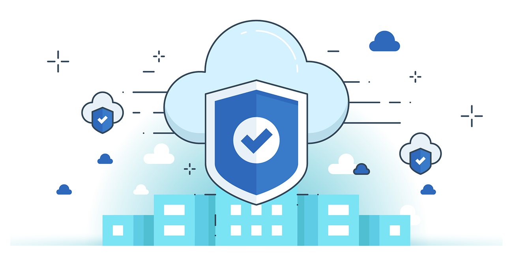

Cloud Security
Cloud security involves protecting data, apps, and services that are hosted on cloud platforms. It's extremely important and relevant today as more organisations and individuals begin to shift to cloud services due to their speed and availability/adaptability and continual growth. It's extremely important to note that both the provider and the user have a shared responsibility to secure their cloud.
Challenges
The cloud faces a lot of unique risks such as misconfigured storage "buckets" or weak access to controls. It also can be extremely dangerous if shared incorrectly as multiple users can access it freely on the same cloud servers. A good example is data leaks from reliable phone providers such as Optus due to poorly secured cloud storage.
Best Practices
- Use multi factor authentication and strong access control
- Encrypt data at rest points and when in transit
- Regularly monitor and audit cloud resources
- Backups/disaster recovery plans, firewalls, intrusion detection tools (implementation of other security practices)